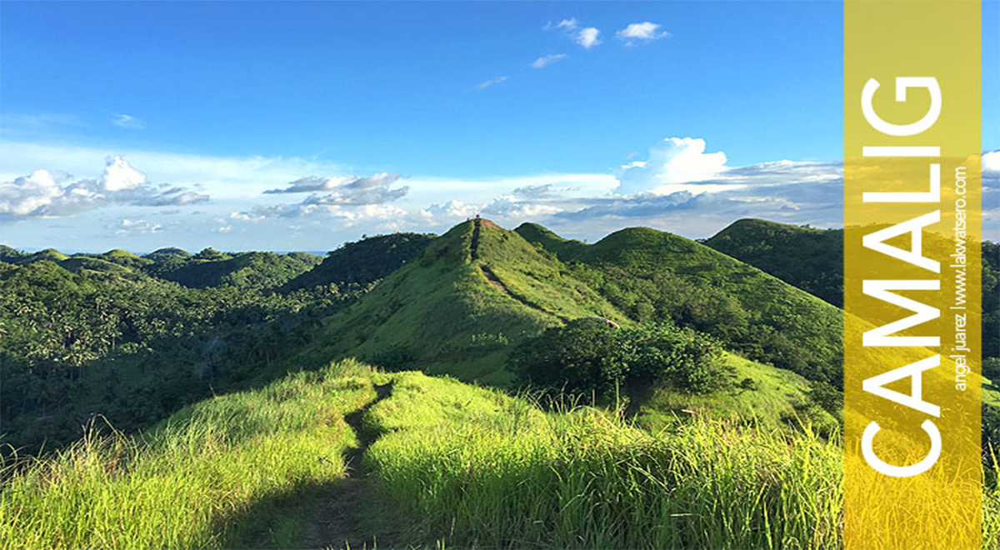
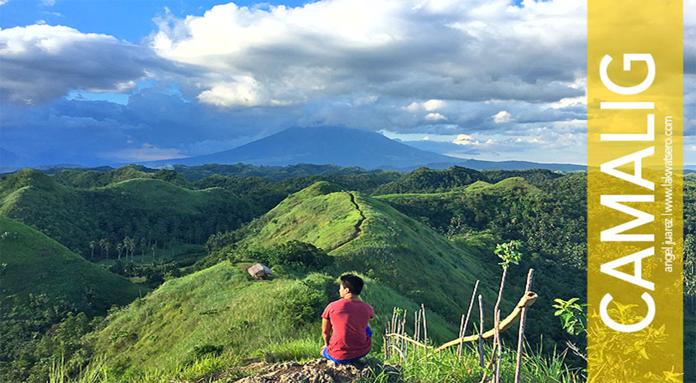
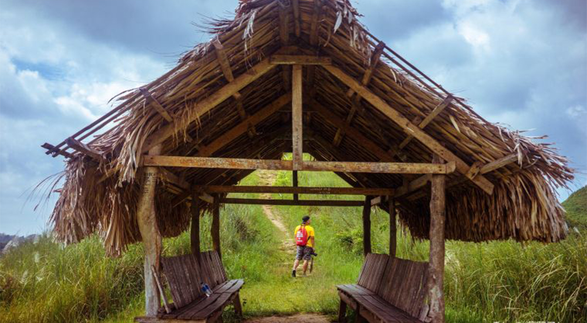

If Bohol has Chocolate Hills and Cebu has jagged Mantalongon Range, Albay’s equally beautiful reply is Quitinday Hills. Quitinday Hills is situated in the village of the same name in the town of Camalig, Albay. It covers a land area of approximately 400 hectares, dotted with verdant mounds or hills that resemble the famed Chocolate Hills of Bohol. But despite the similarities, Quitinday Hills offers a unique charm and vibe with the majestic Mount Mayon in the backdrop. It is as if a combination of two iconic Philippine spots, dramatic and magical.
Baligang - Caguiba Rd, Camalig, AlbayTo get here, make your way to Camalig and drop off at Quitinday Junction / Diversion Road. Charter a tricycle from the junction to take you to the site. Trike rate is P500/round trip good for maximum of five passengers, travel time is around 45 minutes one-way. Pay the P20 environmental fee then trek for 15 minutes, no need for a guide.